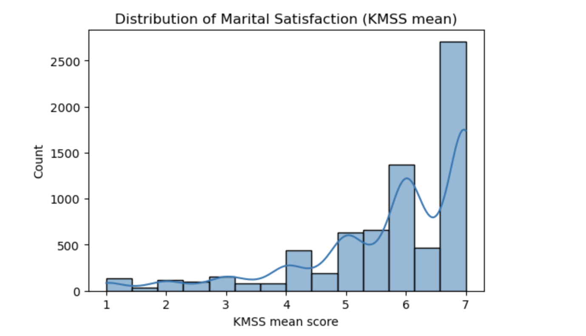
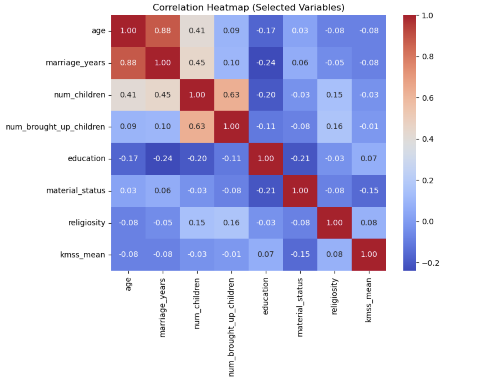
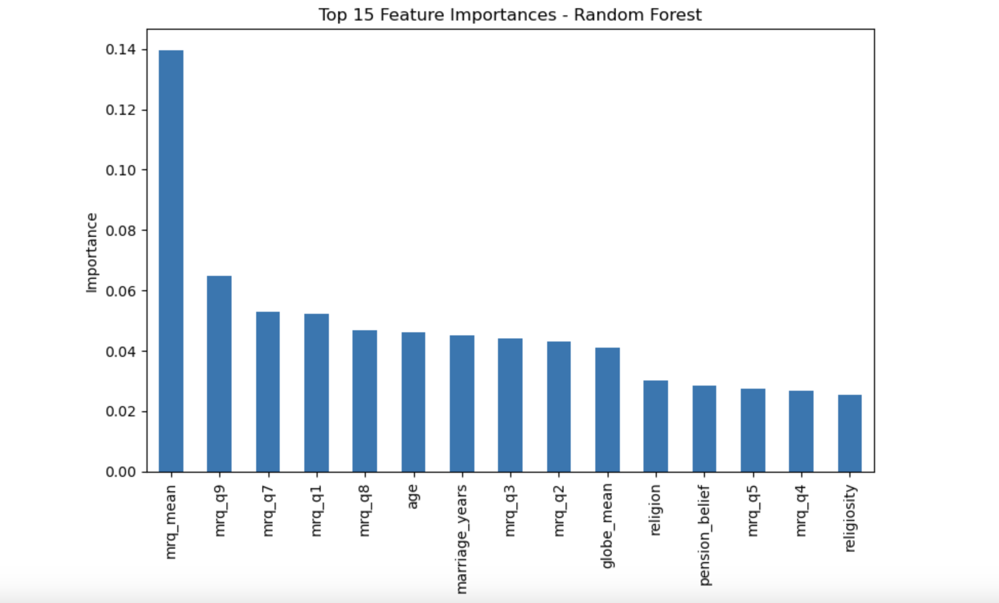

Project Overview
I started this project with one main question in mind: what actually makes a marriage satisfying?
People often make assumptions about marriage. Some people think age matters the most. Others think having children changes everything. Some believe religion or culture is the main driver. I wanted to move past assumptions and use data to see what the strongest patterns actually were.
To do that, I worked with a dataset containing responses from 7,178 married individuals across 45 countries. I cleaned the data, explored it visually, created new features, and trained machine learning models to predict marital satisfaction.
What made this project especially meaningful to me is that it sits at the intersection of something very human and something very technical. On one side, it is about emotions, connection, and relationships. On the other side, it is about data cleaning, pattern finding, modeling, and interpretation.
The Dataset
The dataset combined several different types of information, which made it possible to study marriage from more than one angle.
Demographics
Age, sex, education, number of children, years married, and other background variables.
MRQ
Questions measuring relationship quality, including love, pride, attraction, romance, and enjoyment.
KMSS
A 1–7 marital satisfaction scale used as the main target for the project.
GLOBE
Cultural orientation questions measuring family and social expectations.
In simpler terms, this means the dataset did not just tell me who people were. It also gave clues about how they felt in their relationship and what kind of cultural expectations surrounded that relationship. That is what made it powerful. It allowed me to compare background factors with emotional and cultural factors instead of looking at only one side.
How I Cleaned and Prepared the Data
Before I could analyze anything, I had to make the raw data usable. Like many real-world datasets, it was not perfectly ready to go.
- Removed extra header rows that were not actual participant data
- Renamed columns into clearer labels so they were easier to work with
- Converted survey answers into numbers so the models could understand them
- Used median imputation to fill in missing numeric values
- Created a binary target variable for satisfaction
I also created two summary features: mrq_mean, which represents overall relationship quality, and globe_mean, which represents overall cultural orientation.
This step mattered because machine learning models cannot understand messy survey responses the way people do. They need structured numbers. So part of the project was translating human responses into a clean format while still preserving their meaning.
Exploratory Data Analysis
Before I built any models, I first wanted to understand what the data looked like. This stage is called exploratory data analysis, or EDA. It is basically the process of looking around the dataset to see what stands out before trying to make predictions.
One of the first things I noticed was that the dataset was imbalanced. In simple terms, that means there were many more people who reported being satisfied than people who reported being dissatisfied. That matters because if a model sees mostly satisfied people, it can become easier for it to predict satisfaction by default. So later on, I had to pay attention to more than just accuracy.
The first graph below is a histogram of marital satisfaction scores. The bottom axis shows the satisfaction score, and the left axis shows how many people fall into each score range.
The bars are much taller on the right side of the graph, especially around scores of 6 and 7. That tells me that most participants in the dataset reported being fairly satisfied or very satisfied in their marriage. There are still people with lower scores, but there are much fewer of them.
This graph gives important context for the whole project. It shows that the data leans heavily toward happy marriages, which explains why I needed to be careful when evaluating the models later.

Distribution of marital satisfaction scores based on the KMSS mean. Most scores cluster between 5 and 7, showing that the majority of participants reported being satisfied in their marriage.
I also used a correlation heatmap to see how the main numeric variables relate to one another. A correlation is just a way of measuring whether two things tend to move together.
For example, if one variable goes up and another usually goes up too, that would be a positive relationship. If one goes up while the other tends to go down, that would be a negative relationship. And if there is little pattern at all, the relationship is weak.
In the heatmap below, darker warm colors show stronger positive relationships, cooler colors show more negative relationships, and lighter values mean weak relationships.
Some results made complete sense. For example, age and marriage_years have a strong positive relationship. That is expected, because older participants are more likely to have been married longer. In the same way, num_children and num_brought_up_children are also strongly related.
But the most important thing this heatmap showed me was what it said about kmss_mean, which is the marital satisfaction score. Its relationships with most demographic variables were weak. Age, years married, number of children, and education all had only small connections with marital satisfaction.
In very simple language, this means that just knowing someone’s age, how many kids they have, or how long they have been married does not tell you much about whether they are happy in their marriage. That was a major clue that the stronger answers were probably going to come from the relationship-quality variables instead.

Correlation heatmap of selected numeric variables. The key message here is that most demographic variables had weak relationships with marital satisfaction, which hinted that emotional relationship factors would matter more.
Models I Used
Once the data was cleaned and explored, I trained multiple machine learning models to predict marital satisfaction. I did not want to depend on only one method, because different models detect patterns in different ways.
- Random Forest for capturing more complex patterns
- Support Vector Machine (SVM) for class separation
- K-Nearest Neighbors (KNN) for similarity-based prediction
- Decision Tree for interpretability
- Linear Regression for predicting the continuous satisfaction score
I evaluated the classification models using accuracy, precision, recall, F1-score, and ROC-AUC. For regression, I used MAE, RMSE, and R2.
You do not need to be technical to understand the idea here: I basically tested several different “prediction strategies” and then compared which one gave the best results.
Results
The best-performing model was Random Forest. It achieved an accuracy of 88.5%, an F1-score of 0.932, and an AUC of 0.883. SVM performed almost just as well, while KNN and Decision Tree were slightly weaker.
Random Forest
Accuracy: 0.885
F1-score: 0.932
AUC: 0.883
SVM
Accuracy: 0.883
F1-score: 0.931
AUC: 0.846
KNN
Accuracy: 0.872
F1-score: 0.925
AUC: 0.808
Decision Tree
Accuracy: 0.824
F1-score: 0.892
AUC: 0.714
What this tells me is that the dataset contained meaningful patterns that the models could actually learn from. The models were not just guessing randomly. Random Forest worked especially well because it can handle different kinds of variables and more complex relationships between them.
For the regression model, Linear Regression explained about 48.4% of the variation in marital satisfaction, with predictions landing within about one point of the real score on average.
That is not perfect, but that also makes sense. Marital satisfaction is a complicated human experience, and no survey can capture every single thing that shapes it. Even so, the model still explained a meaningful amount of what was going on.
What Actually Predicted Marital Satisfaction?
After I found the best-performing model, I wanted to understand why it worked well. That led me to the most important chart in the whole project: the Random Forest feature importance graph.
A “feature” is just a variable in the dataset. So feature importance tells me which variables the model found most useful when making predictions. The taller the bar, the more the model relied on that variable.
The tallest bar by far is mrq_mean. That is the overall relationship-quality score. It combines multiple relationship questions into one average score, so it reflects how strong the emotional and relational side of the marriage is overall.
Right away, that tells me something powerful: relationship quality was the strongest predictor of marital satisfaction.
Several other MRQ variables also appear near the top of the chart. These are questions related to love, pride, attraction, enjoyment, and romance. That matters because it shows the result is not coming from one random question. It is a consistent pattern across multiple emotional aspects of the relationship.
Age and years married show up in the middle of the chart, which means they had some influence, but much less than the relationship-quality variables. Cultural values also had some effect, but again, not nearly as much as emotional connection.
Religion and religiosity appear even lower. So while they had some role, they were not nearly as important as the direct emotional experience inside the relationship.
In everyday language, this graph answers the project’s biggest question very clearly. If you want to understand whether a marriage is satisfying, things like love, pride, romance, attraction, and enjoyment are much more informative than things like age, education, or number of children.

Random Forest feature importance chart. Relationship-quality variables, especially mrq_mean,
were the strongest predictors of marital satisfaction, far above demographic background variables.
Religion and Satisfaction
Religion was not one of the strongest predictors in the model, but I still wanted to look at it more closely. Sometimes a variable can have low overall importance in prediction while still showing noticeable differences when you compare groups directly.
- Highest average satisfaction: Evangelic, Hinduism, Protestant
- Lowest average satisfaction: Jewish, Buddhist
So I would describe religion as having a small overall influence but some visible group-level differences. In other words, religion did not drive the model strongly the way relationship quality did, but it was not completely flat either.
This is an important distinction, because it shows that not every useful insight has to come from the exact same kind of analysis. Machine learning told me religion was not a major driver overall, while the group comparison showed that some average differences were still there.
Final Insight
The clearest lesson from this project is that emotional connection is the biggest driver of marital satisfaction. Love, pride, romance, attraction, and enjoyment consistently mattered more than age, education, number of children, or religion.
In other words, it is not mainly about who the couple is on paper. It is more about how they experience the relationship itself.
That was the most meaningful part of the project for me. The data supported something that feels very human and very real: strong marriages are shaped much more by emotional quality than by surface-level background characteristics.